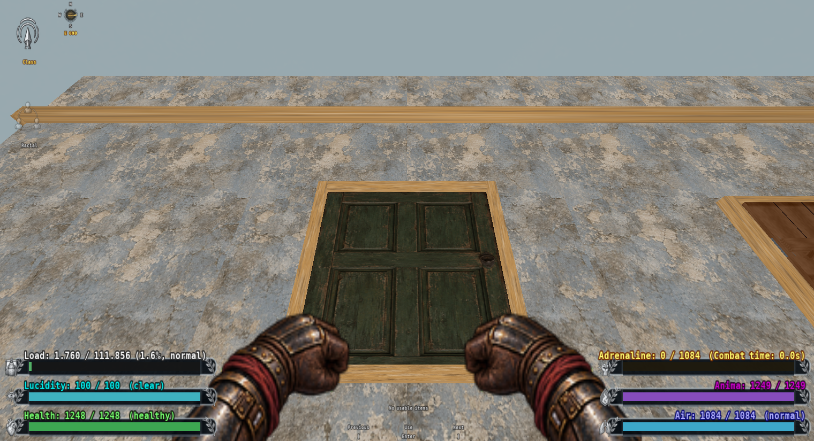
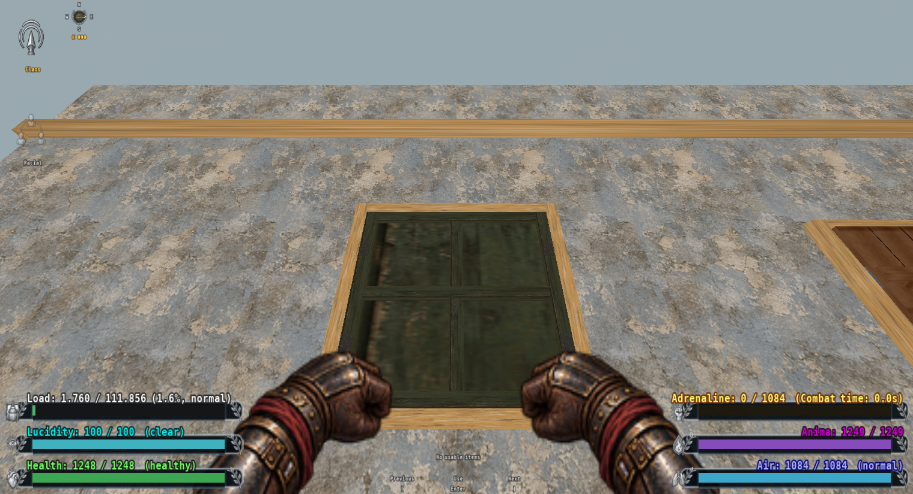
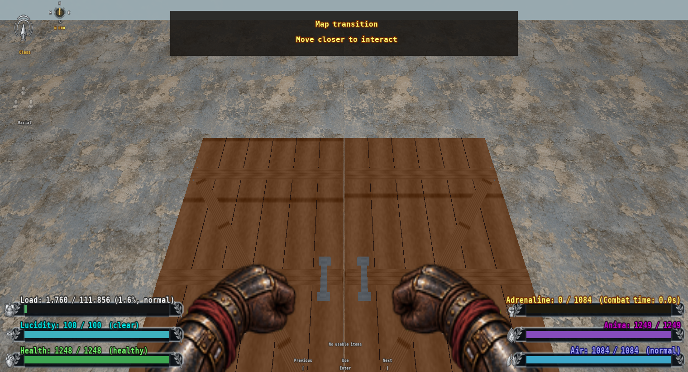
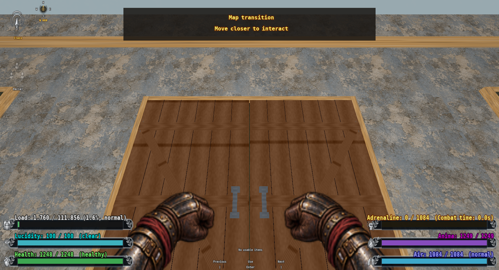
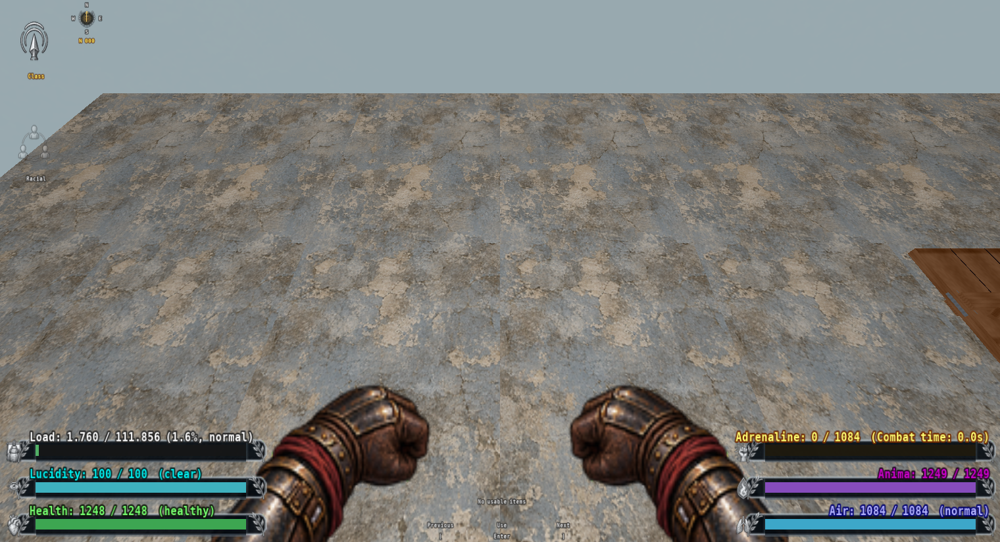
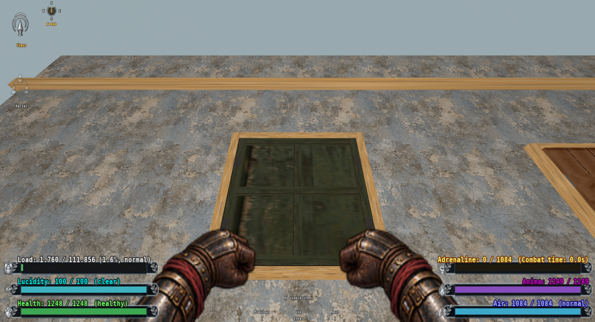
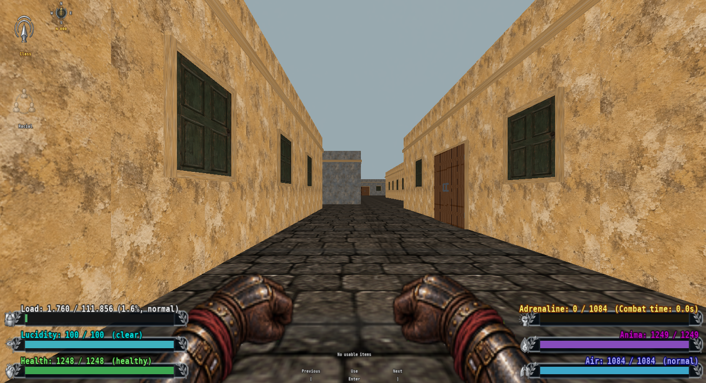

The original large facade could disappear from nearby streets. The corrected production class uses a render radius derived from the unchanged mesh. Collision, house placement, original model, maps and usable portals remain unchanged.
Left: release117. Middle: corrected release118 with original art. Right: corrected release118 with the separate, unapproved #878 joinery option. These captures use the actual production facade classes, without a diagnostic radius subclass.
Inspect especially Window270 and Door90. Teleports, invulnerability/notarget and menu dismissal are diagnostic. The short walk is 26.663MU; this gallery does not establish full-city traversal, siege fluency or author acceptance.
Image review record · Native persistence and house travel · Presentation and tic tails · Separate joinery proposal











